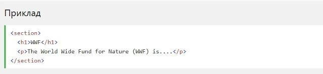
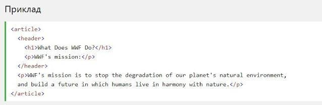

Згідно з документацією в3к'с HTML5: "розділ представляє собою тематичну угруповання контенту, зазвичай з заголовком".
Підтримка браузерів

Семантичні елементи HTML5 підтримуються у всіх сучасних браузерах.
Крім того, ви можете "навчити" старих браузерів, як обробляти "невідомі елементи".
Прочитайте про це в підтримці браузера HTML5
Нові семантичні елементи в HTML5
- HTML5 пропонує нові семантичні елементи для визначення різних частин веб-сторінки:
HTML5 section елемент
Елемент section визначає розділ в документі.
Домашня сторінка зазвичай може бути розділена на розділи для ознайомлення, змісту і контактної інформації.
HTML5 article елемент
Елемент article визначає незалежний, автономний вміст.
Стаття повинна мати сенс самостійно та вона повинна мати можливість читати його незалежно від іншої частини веб-сайту.
- Приклади того, де можна використовувати елемент article:

HTML5 header елемент
Елемент header задає заголовок для документа або розділу.
Елемент header повинен використовуватися в якості контейнера для вступного змісту.
В одному документі може бути кілька елементів header.
У наступному прикладі визначається заголовок для статті:
HTML5 footer елемент